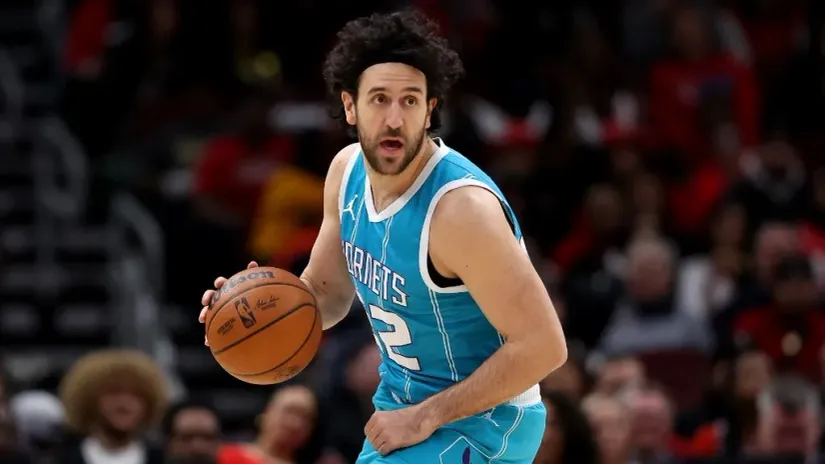

Španci pišu: Rat večitih za Vasu Micića
Zainteresovano i pola Evrolige
Španci tvrde: Vasilije Micić ponovo u dresu beogradskog kluba – moguće je! Samo je pitanje – kojeg.
Jer, kako tvrdi portal Ensestando za plejmejkera reprezentacije Srbije zainteresovani su i Crvena zvezda, njegov bivši klub, ali i Partizan!
Nema nekih konkretnijih informacija o interesovanju beogradskih večitih rivala, ali na koju god stranu Topčiderskog brda kad bi Micić otišao, to bi bila bomba nad bombama u letnjem prelaznom roku. Pogotovo ako bi nakon dela karijere u crveno-belom dresu odlučio da sad obuče crno-beli.
No, za Vasilija Micića zainteresovano je i pola Evrolige. Za njega pitaju, kako pišu mediji sa svih strana Evrope i Olimpijakos i Panatinaikos i Fenerbahče i Real Madrid i Barselona. Španci su čak izvukli odnekud Micićevu izjavu da bi voleo da jednog dana obuče dres katalonskog giganta.
Najkonkretnija je, ipak, od svih informacija ta da je reprezentativac Srbije odbio Hapoel iz Tel Aviva, novog učesnika Evrolige. Micić je, navodno, zbog ratnih dejstava u tom delu Bliskog istoka odbio da se preseli u Izrael.
Micić je od 2023. godine u NBA ligi, gde je igrao za Oklahomu, Šarlot i Finiks, mada nije uspeo da se nametne u klubovima „preko bare“, da se izbori za minutažu kakvu je imao pre toga u Anadolu Efesu sa kojim je dva puta uzastopno osvajao Evroligu, a jednom bio izabran i za MVP Evrolige (2021. godine).